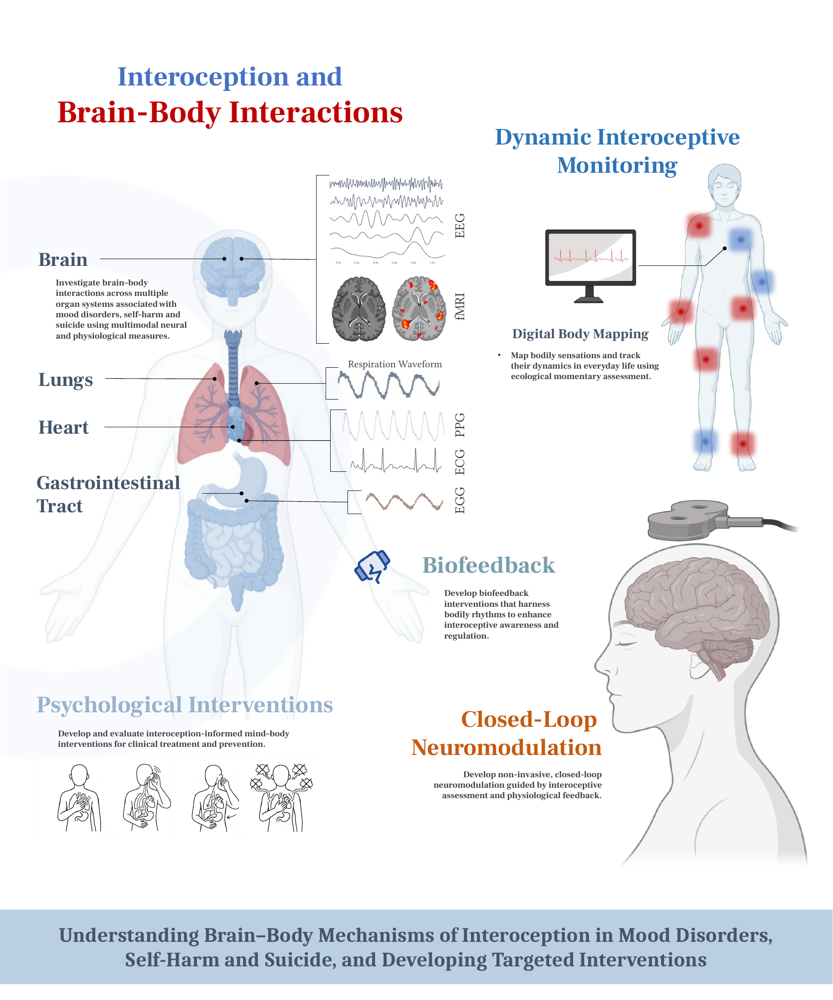

Vanke School of Public Health · Tsinghua University
Youth Mental Health Lab
We study mental health in children and adolescents, including how common mental health problems are, how they develop, and how to prevent and treat them.
Interoception and mental health
Interoception is how we sense and interpret signals such as a heartbeat or a change in breathing. We study how these signals relate to mental health and how that knowledge can inform interventions.

Selected findings
A review of 66 studies found that greater trust in bodily signals was associated with fewer suicidal thoughts and behaviors. A trial in 84 schools found that teachers who received Life Gatekeeper Training reported greater confidence and willingness to intervene.
People and partnerships
Runsen Chen is the lab’s principal investigator at Tsinghua University. The Life Gatekeeper trial included coauthors affiliated with the University of Hong Kong, Brown University, and Beijing Huilongguan Hospital.
Research support
Published acknowledgments document support from the National Natural Science Foundation of China and Tsinghua University.
Collaborate with us
Contact the lab about joint proposals or research in adolescent mental health, brain–body measurement, school-based prevention, or digital interventions.
About the lab
Founded in 2021 at Tsinghua University’s Vanke School of Public Health, the Youth Mental Health Lab brings together researchers in psychology, psychiatry, neuroscience, public health, computer science, biomedical engineering, and the social sciences.
Our work spans population-based cohorts, brain and physiological measurements, and the design and evaluation of interventions in schools, clinics, and digital settings.